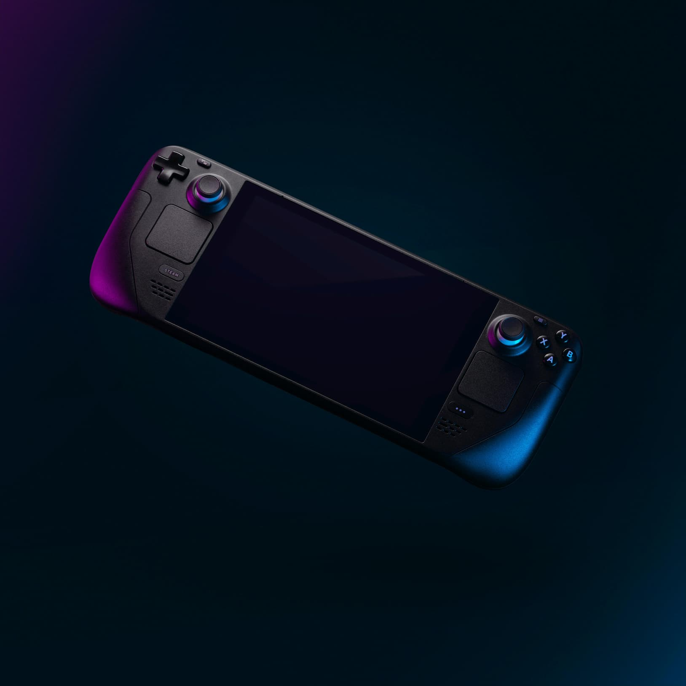
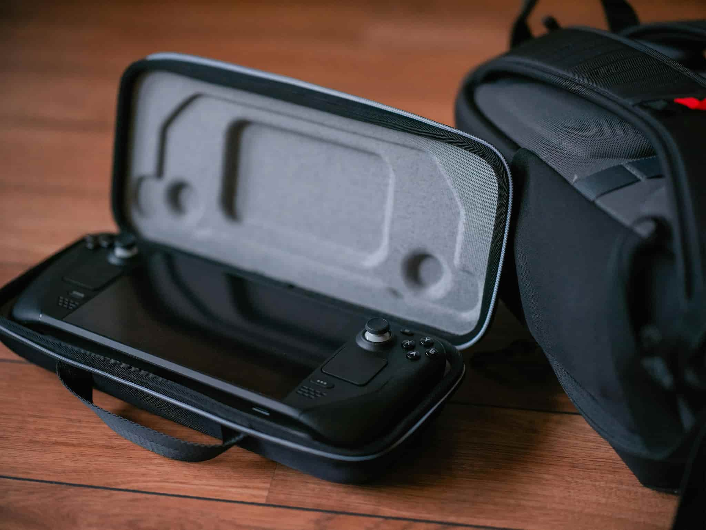

Steam Deck Overview

The Steam Deck is Valve’s handheld gaming PC, designed to bring your entire Steam library into a portable form factor while running SteamOS (Linux).
Specifications
| Category | Details |
|---|---|
| Processor | Custom AMD APU: Zen 2 CPU (4 cores, 8 threads) + RDNA 2 GPU |
| RAM | 16 GB LPDDR5 |
| Storage Options | 64 GB eMMC, 256 GB NVMe SSD, 512 GB NVMe SSD |
| Display | 7-inch LCD touchscreen, 1280x800 resolution, 16:10 aspect ratio |
| Battery Life | 2–8 hours depending on workload |
| Operating System | SteamOS 3.0 (Linux-based) |
| Connectivity | Wi-Fi, Bluetooth 5.0, USB-C with DisplayPort 1.4 support |
| Dock Support | Optional Steam Deck Dock for HDMI, Ethernet, and USB peripherals |
Key Features

- Access to your full Steam library on the go.
- Runs Linux-based SteamOS with Proton compatibility for Windows games.
- Expandable storage via microSD card slot.
- Custom controls: thumbsticks, trackpads, touchscreen, and gyro.
- Docking capability for big-screen play with peripherals.